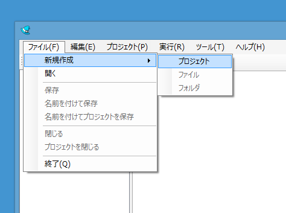
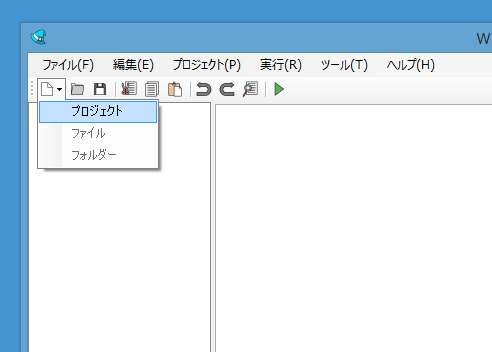
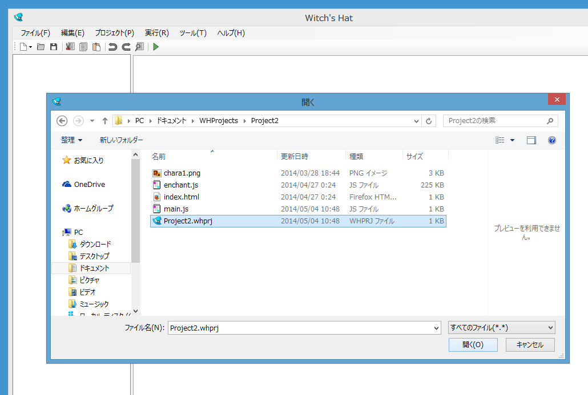
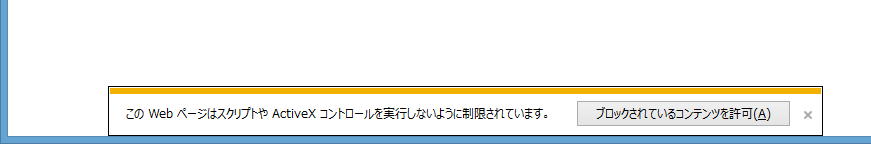

プロジェクトを作る
Witch's Hatはゲーム製作に使用するファイルをプロジェクトで管理します。
プロジェクトを作るには、ファイルメニュー→「新規作成」→「プロジェクト」またはツールバーの新規作成→「プロジェクト」を選び、
プロジェクト作成ダイアログを開きます。


- プロジェクトの種類(後述)を選びます。
- プロジェクト名を入力してください。プロジェクト名はゲーム名ではなくプロジェクトを管理するための名前です。
- プロジェクトのフォルダはプロジェクトを作成するフォルダです。
OKを押すとプロジェクトが作成されます。
プロジェクトを作成するとプロジェクトのフォルダ内にプロジェクトファイル(whprj)を作成します。プロジェクト管理用のファイルですので削除しないでください。
プロジェクトの種類
- enchant.jsプロジェクト
- 最も基本的なプロジェクトです。enchant.js本体と表示用のHTMLファイル、ゲームを記述するmain.jsが含まれています。
- クマプロジェクト
- クマを表示するプロジェクトです。enchant.jsの基本的なファイルに加えてキャラクター画像素材が含まれています。Spriteのテストをするときなどに便利です。
- バーチャルパッドプロジェクト
- バーチャルパッドを使用するゲームを作成するためのプロジェクトです。enchant.jsの基本的なファイルに加えてバーチャルパッドを表示するためのui.enchant.js、また必要な画像リソースが含まれています。初期状態ではデジタルパッドを表示します。アナログパッドを使用する場合はパッドを表示する部分を書き換えてください。
- 空のプロジェクト
- 何もファイルが含まれていないプロジェクトです。enchant.js本体やHTMLファイルなどは自分で追加する必要があります。すでに他のソフトで作成したゲームをWitch's Hatで編集する場合などに選択してください。
プロジェクトを開く
既存のプロジェクトを開くにはファイルメニュー→「開く」を選ぶかツールバーの開くボタンを押して、ファイルを開くダイアログを開いてください。
開きたいプロジェクトのプロジェクトファイル(whprj)を選んでください。
プロジェクトが開きます。

ソースコードを編集する
ファイルツリーの編集したいソースファイルをダブルクリックすると、そのソースファイルが開かれます。
編集した後は必ず保存を実行してください。
リソースを追加する
メニューから追加する
プロジェクトメニューから「既存項目の追加」を選ぶとファイル選択ダイアログが表示されます。追加したいリソースファイルをダイアログで選んでください。プロジェクトにコピーされます。
プロジェクトに追加するだけではゲームで表示されません。Game.preloadなどで読み込む処理を記述してください。
エクスプローラーで追加する
プロジェクトを右クリックしてエクスプローラーで開くを選択すると、プロジェクトのフォルダがエクスプローラーで開きます。追加したいリソースをプロジェクトフォルダにコピーしてください。
コピーした後ファイルツリーをクリックしてF5キーを押してください。追加したファイルがファイルツリーに表示されます。
ゲームを実行する
ゲームを実行するには、実行メニュー→「ブラウザで実行」を選ぶかツールバーの「ブラウザで実行」ボタンを押してください。
サーバーを実行していない状態でInternet Explorer上でゲームを実行しようとすると警告メッセージが表示されます。「ブロックされているコンテンツを許可」を押して継続してください。

{kind=link}